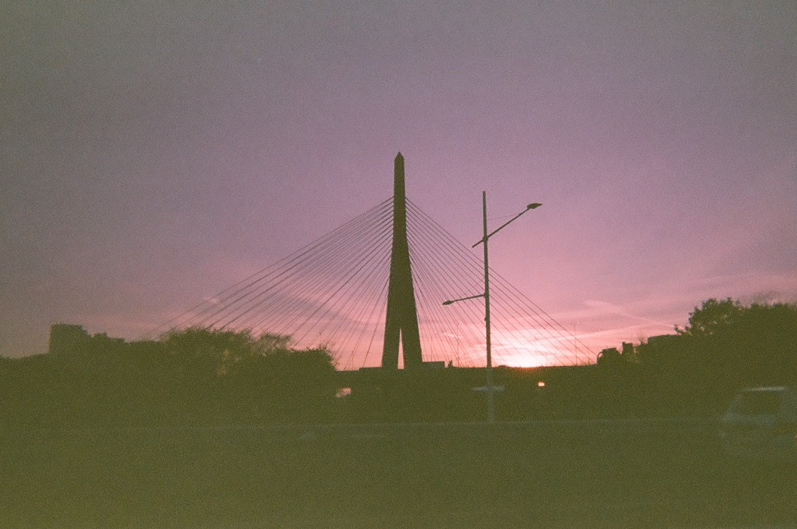

Dark, murky and underexposed - that pretty much describes the latest batch of film I got back from the lab earlier this month.
Out of three rolls of expired 35mm I sent in, each with 27 shots apiece, only a handful came back as fully visible images. The rest looked like they’d been dropped in water and hazed over, making for a rather disappointing scrapbook of my last adventure.
Old North Church, Brewer Fountain, man looks cluelessly at map
But wait, you say. Expired 35mm? Shouldn’t bad results be expected when using something well past its best use by date?
How can I be disappointed when I actively chose not to follow the rules and failed as a result?
Well, because I’m stubborn for one and still paid close to $40 to develop the shots anyway. But also because shooting decade old film in the past has rewarded me with some exceptionally unique and vibrant effects.
“Straight out of a postcard rack from the 1960’s or 70’s,” was how I described the last shots I got from my old Pentax with a roll of Clark Color that expired in 2008.
Check out my previous post to see how cool those turned out.
But then I guess that just spoiled me into thinking all expired film would turn out as visually interesting. I didn’t appreciate the fact that my $40 was a gamble on whether or not I’d be able to see anything at all.
And with this new batch of photos, what I mostly ended up seeing was just purplish brown.
Cars driving along North Washington St Bridge
Needless to say, I wasn’t too keen on blogging about these when they first came back from the lab. I was just gonna settle with things being fun in the moment while shooting them with friends.
Yet, I also haven’t blogged about anything at all since my last photos were developed nearly half a year ago, and my procrastination has been noted.
So I suppose there’s still a story to be told here, especially since some of the shots are still pretty interesting too despite the haze.
Boston City Hall - ugliest building in America. Kinda growing on me.
These photos were taken back in October with my girlfriend Leighah and good friend Sophia.
We had planned to go into Boston to walk the Freedom Trail and I thought it’d be fun if we all had film cameras to capture the historic landmarks along the way.
Inspired by the uniquely colorful results of my last disposable camera, an unbranded one that expired in 2010, I decided to find more like it to take with us on this trip.
One quick search on eBay later and I had a pack of three Fuji flash film cameras, two with best by dates of 2013 and another slightly fresher at 2015. For about $20, the lot arrived just in time before we went.
Yet here also stood the first red flag for what was to come - they shipped up from Alabama.
And Alabama is no sweet home for film considering its hot and humid climate. Despite being several years newer than the last disposables I found at a local thrift store, these Fujis had likely been exposed to year-long Southern humidity for the past decade.
This isn’t great for the film inside them as high temperatures can damage their photographic emulsion, or the layers of light-sensitive coatings that produce an image when exposed by the camera’s shutter.
Of course, you want a little bit of damage with expired film to get those vibrant colors and vintage sepias. But these cameras seemed to have been baked just a little bit too long.
Combined with the fact that they had no light meters to adjust their exposures depending on how illuminated an area was, the odds of this gamble paying off were not in my favor.
Throughout the whole trip, all three cameras struggled to pick up anything unless shot in direct sunlight.
Posing by Brewer Fountain,
Having begun our day in Boston Common, I tried to take a photo of Leighah and Sophia in front of Brewer Fountain, which is near the start of the Freedom Trail.
But the fountain’s shadow proved too much for the camera to handle, making them blurred and difficult to see.
Trying again, I took a shot of Leighah browsing the wares at a small jewelry stand next to Park Street Station. But that just turned out even darker.
Then most of the other shots we took around the Common suffered the same fate, washed out by tree shade. Though Leighah did manage to snap a relatively clear one of someone feeding a squirrel.
Fall foliage at Boston Common
The first truly clean shot came from Sophia’s camera, taken as we walked towards Park Street Church in a less shady area.
While the featured trio in it are not us, it’s still a very cool and retro looking shot of the city. If not for their modern puffer jackets, the picture could easily pass off as 1974 rather than 2024.
Now this was what I was hoping all of our photos would turn out like.
And just a little bit later, Leighah was able to score another vibrant shot of the State House and its iconic golden dome.
With more of a greenish hue to stand out from the rest, its colors are reminiscent of the photos we took at Buttonwood Park Zoo with that first disposable I had.
So, direct sunlight was clearly the key to success with these cameras. But that wasn’t something we had great access to throughout the rest of the trip, surrounded by shade from the skyscrapers and an earlier sunset after daylight savings ended.
Consequently, most of what we took after leaving the Common succumbed to that dim and grainy haze this batch has become infamous to me for.
I remember us taking shots of Old City Hall, The Corner Bookstore turned Chipotle, and Paul Revere’s statue among other landmarks, but none of them turned up visible on the film.
The Giant Tea Kettle near Government Center and a pigeon perched atop the Irish Famine Memorial fared a bit better at least.
Steam puffs out of the kettle, a pigeon rests its wings
By the end of the trip with dusk drawing in far too quickly, our last shots were effectively just two tones - a shade of rusty purple to represent the sky and jagged walls of dark brown for the buildings.
Pairs of white and red dots broke through along the bottom as head and tail lights from cars.
Converse HQ. It was not this dark when the photo was taken.
Our last saving grace was the sunset, with one of Leighah’s final shots making Zakum Bridge look quite mystical contrasted over it.
Those same hazy purple tones that polluted so many of our other shots actually added to its intrigue this time.
This would make excellent album art tbh
Altogether though, this batch of film was not what I had hoped for when I plunked down $40 to get it developed. The handful of good shots we did get don’t quite outweigh the entire bucket of bad ones leftover for me.
But that’s the gamble you take with any expired roll, playing chance with something well beyond its best use by date in hopes that it develops spectacularly.
Rolling the dice didn’t pay out as well this time, but that’s not gonna stop me from trying my luck again in the future!

Blind selfie award goes to Sophia
And we’ll definitely have to do Freedom Trail Part 2 with better cameras.